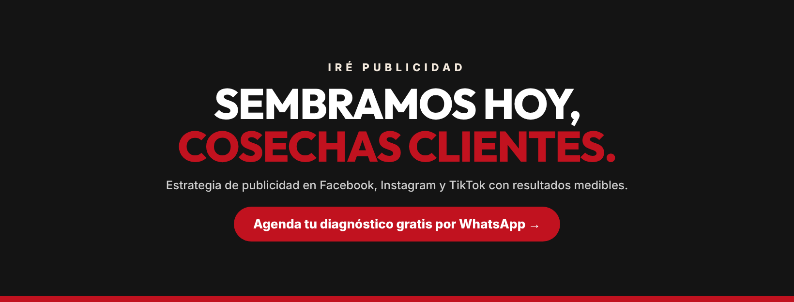
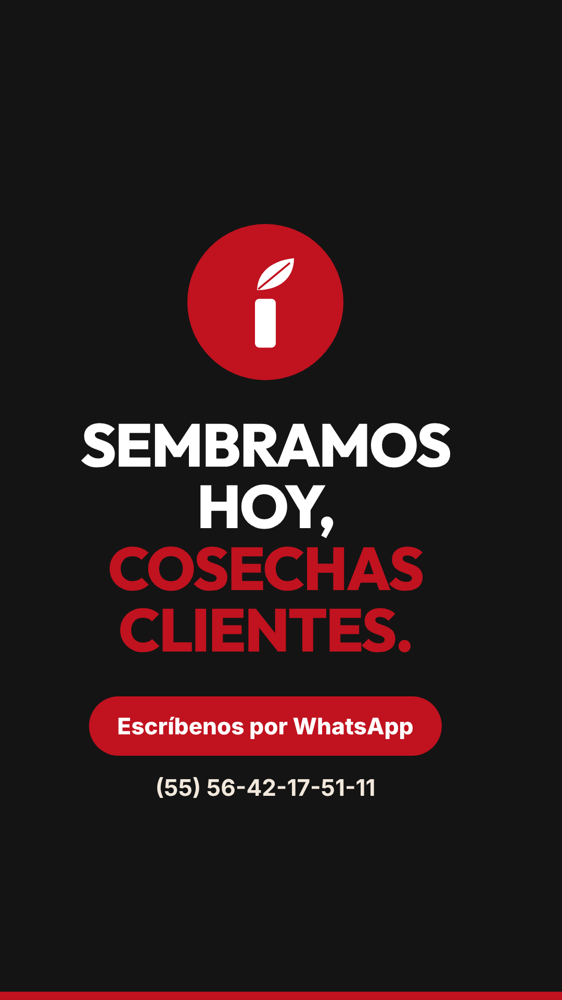

IRÉ
PUBLICIDAD
Sembramos hoy, cosechas clientes.
MANUAL DE MARCA · 2026
Sembramos hoy, cosechas clientes.
MANUAL DE MARCA · 2026
Iré significa buena fortuna en yoruba. Es la raíz de Irete —ire te, "crear la buena fortuna"— y aparece en los nombres del signo: Mojiré, "despierto con iré", y Mogbairemu, "me aferro a mi iré".
El propio signo nombra entre sus caminos la administración, el marketing y las ventas, y promete riqueza, honor y estar siempre a la vista.
El cazador confió en su fuerza; el agricultor sembró con paciencia y siguió el consejo. El agricultor se quedó con la riqueza. Así trabajamos: sembramos estrategia y cosechamos clientes.
Las armas no vencieron al Detractor; la estrategia, el tambor y la ofrenda sí. Ganamos con inteligencia, no con ruido.
Sembrar la buena fortuna de cada negocio que confía en nosotros.
Publicidad con estrategia que se mide en clientes y ventas, no en likes.
Sembramos hoy, cosechas clientes.
Como el agricultor: constancia hoy, resultados mañana.
Pensamos primero, invertimos después.
El signo pide no esconder planes: reportes claros cada mes.
"No dormir en un proyecto importante": seguimiento constante.
Escuchamos al cliente y a los datos antes de decidir.
Honramos a quien confía en nosotros.
El acento de la í es una hoja que brota: la siembra del agricultor y una flecha que sube. Rojo como el osun (camwood) de Irosun.
Portadas, reels y fondos de video.
Documentos, propuestas y web.
Foto de perfil, marca de agua y favicon. Mínimo 40 px.
#C1121F
Rojo Irosun · ícono, acentos y botones. El rojo del osun.#141414
Negro carbón · fondos y texto.#F2E8DC
Arena · fondos cálidos, tierra de siembra.#C9A227
Oro Àjé · solo detalles de logros y resultados.Regla: nunca usar azul añil (índigo); es tabú del signo. Proporción sugerida: 60% negro o arena · 30% blanco · 10% rojo.
Explicamos fácil, sin tecnicismos.
Cada mensaje cierra con una acción clara.
Nada de "hazte viral"; hablamos de clientes reales.
Sembramos hoy, cosechas clientes. Publicidad en Facebook, Instagram y TikTok. CDMX 👇
Agenda tu diagnóstico gratis · Siembra tu primera campaña · Escríbenos por WhatsApp · Tu fortuna empieza con un anuncio
Cada servicio lleva el nombre de una etapa de la siembra, para que el cliente entienda el proceso.
Identidad, mensajes y perfil optimizado.
Diagnóstico, cliente ideal y plan de campaña.
Reels y anuncios grabados en tu negocio.
Meta Ads y TikTok Ads medidos en mensajes y ventas.
Oferta de entrada: "Diagnóstico Siembra" gratis de 15 minutos por WhatsApp.

Portada de Facebook · 1640 × 624
Foto de perfil · 720 × 720
Usuario sugerido: @irepublicidad

Cierre de reels · 1080 × 1920